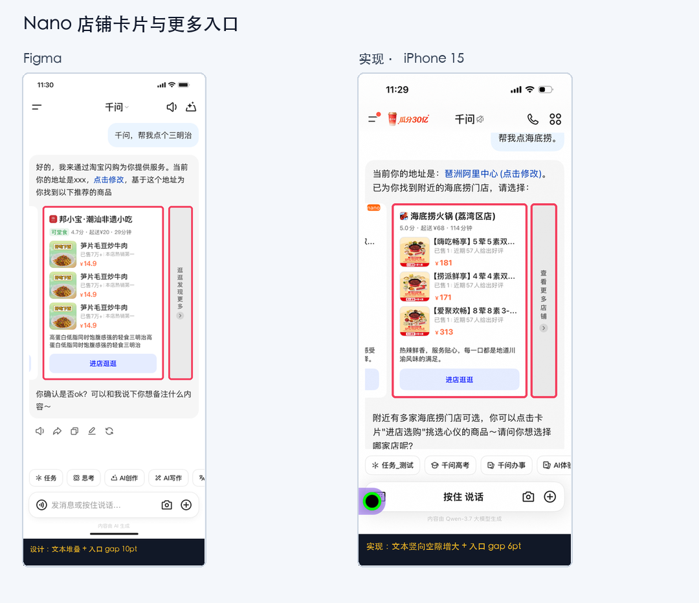
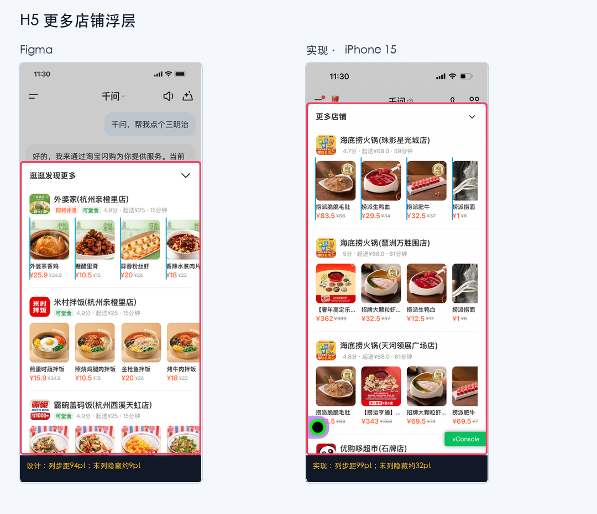
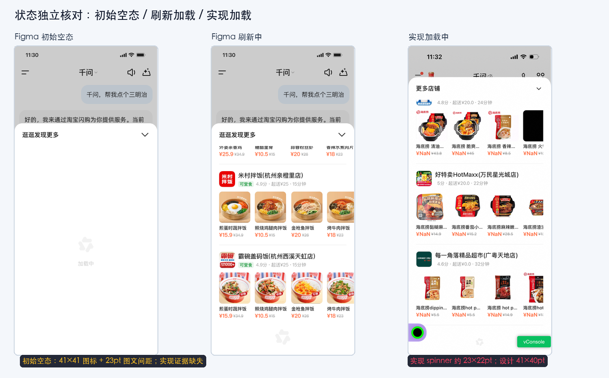
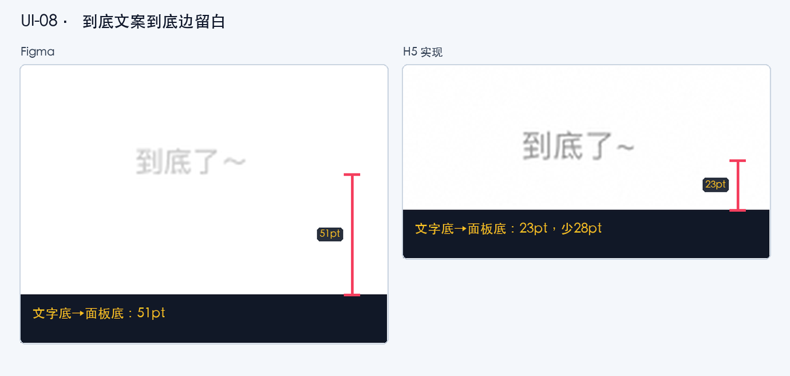
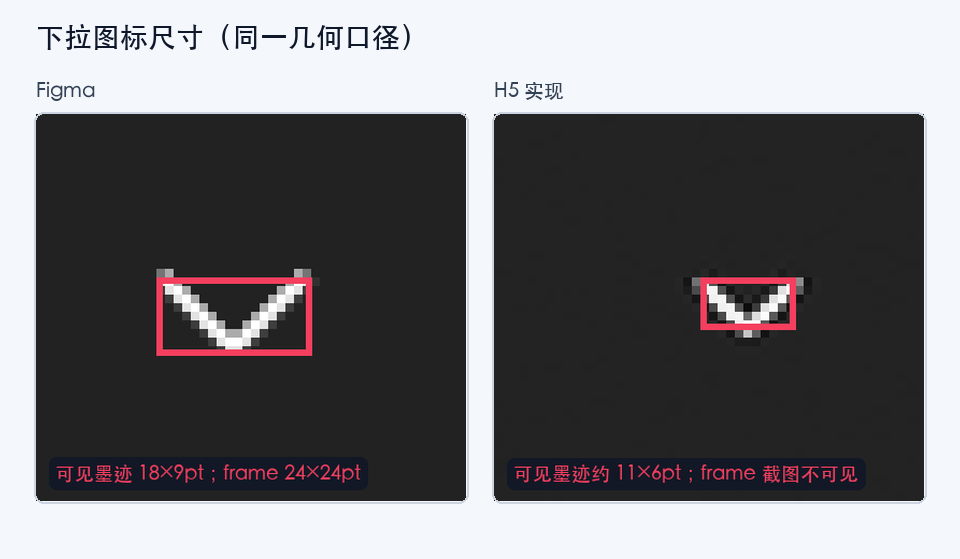
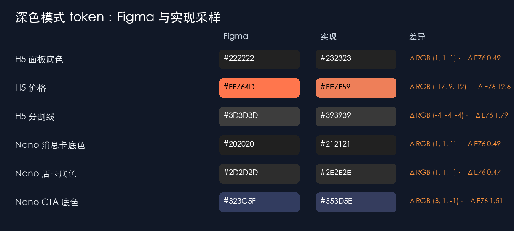
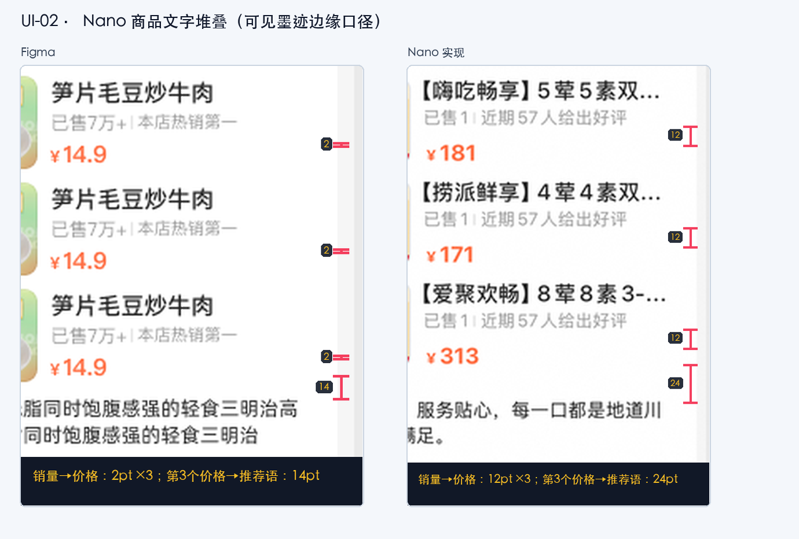

有效问题 / 待确认项
9
P0 0 · P1 7 · P2 2 · 已忽略 10
本版重新从 Figma 与 8 张 iPhone 15 截图量取原图坐标，撤销旧报告中口径错误的间距结论；所有间距线均由源图边缘坐标生成并回算校验。Nano 与 H5 分开审计；H5 按 375→393 的等比适配复核尺寸、列距和右侧裁切。
设备：iPhone 15截图：1179×2556px逻辑视口：393×852pt截图比例 C=3H5 布局比例 L=1.048Nano 卡片H5 浮层


| 状态 / 关系 | Figma | 实现 | 差值 | 结果 | 证据口径 |
|---|---|---|---|---|---|
| 初始空态容器总高 | 549pt | 未提供对应实现 | — | 未检查 | 面板内容区 y263→812 |
| 初始空态：顶部留白 | 239pt | 未提供 | — | 未检查 | 内容区顶→图标墨迹顶 |
| 初始空态：图标墨迹 | 41×41pt | 未提供 | — | 未检查 | 浅灰 spinner 联合 bbox |
| 初始空态：图标→“加载中” | 23pt | 未提供 | — | 未检查 | 墨迹底→文字墨迹顶 |
| 初始空态：文字墨迹 | 40×13pt | 未提供 | — | 未检查 | “加载中”联合 bbox |
| 初始空态：文字底→容器底 | 233pt | 未提供 | — | 未检查 | 总和 239+41+23+13+233=549，残差 0 |
| 初始空态：整组中心线 | 比内容区中心下 3pt | 未提供 | — | 未检查 | 图标+文案可见组中心 |
| 刷新加载：spinner 墨迹 | 设计 39×40；运行时应约 40.9×41.9px | 约 21×21px | 约 -19.9×-20.9px | Issue · UI-07 | 同为 spinner 可见墨迹 bbox；设计值先乘 L |
| 刷新加载：末内容→spinner | 设计约 30；运行时应约 31.4px | 约 36px | 约 +4.6px | Issue · UI-07 | 末行可见内容/分割线→图标顶 |
| 到底态：末内容→文案 | 设计约 36；运行时应约 37.7px | 约 43px | 约 +5.3px | Issue · UI-08 | 末价格墨迹/分割线→文案顶 |
| 到底态：文案底→面板底 | 设计 51；运行时应约 53.4px | 约 23px | 约 -30.4px | Issue · UI-08 | 同一面板底边口径；设计值先乘 L |


| 图标实例 | 设计 frame | 设计墨迹 | 实现 frame | 实现墨迹 | 结果 |
|---|---|---|---|---|---|
| H5 面板下拉 icon/down | 24×24 | 18×9 | 需代码复核 | 约 11×6 | Issue · UI-06 |
| H5 刷新 spinner | 40×40 | 约 39×40 | 需代码复核 | 约 21×21 | Issue · UI-07 |
| H5 初始空态 spinner | 40×40 | 41×41 | 未提供 | 未提供 | 未检查 |
| Nano 更多入口圆形底 | 16×16 | 16×16 | 截图估计 16×16 | 约 16×16 | Pass |
| Nano icon/rightMini | 14×14 | 约 4×7 | 需代码复核 | 约 4×7 | 墨迹 Pass / frame 需复核 |

| 元素 | Figma token / 值 | 实现采样 | ΔRGB / ΔE76 | 结果 |
|---|---|---|---|---|
| H5 面板底色 | panel_bg_white · #222222 | 中位/众数 #232323，n=5+区域 | (+1,+1,+1) / 0.49 | 已忽略 · UI-09 |
| H5 主文字 | default_black100 · #FFFFFF | #FFFFFF，核心像素 n≥50 | (0,0,0) / 0 | Pass |
| H5 次文字 | default_grey50 · #666666 | #666666，核心像素 n≥50 | (0,0,0) / 0 | Pass |
| H5 价格 | orange100 · #FF764D | #ED7E58–#EE7F59，核心像素 n≥100 | (-17,+9,+12) / 12.60 | 已忽略 · UI-10 |
| H5 分割线 | 渲染 #3D3D3D | #393939，n=5+线段 | (-4,-4,-4) / 1.79 | 已忽略 · UI-11 |
| H5 下拉图标 tint | #FFFFFF | #FFFFFF，核心像素 n=20 | (0,0,0) / 0 | 颜色 Pass；尺寸 Issue |
| Nano 消息卡底色 | #202020 | #212121，n=5+区域 | (+1,+1,+1) / 0.49 | 已忽略 · UI-12 |
| Nano 店卡底色 | chat_card_bg · #2D2D2D | #2E2E2E，n=5+区域 | (+1,+1,+1) / 0.47 | 已忽略 · UI-12 |
| Nano CTA 底色 | rgba(66,110,255,.24) 合成约 #323C5F | #353D5E，n=5+区域 | (+3,+1,-1) / 1.51 | 已忽略 · UI-13 |
| Nano 更多入口底圈 · 深色 | 截图估计 #535353；父容器 #373737 | 截图估计 #353535；父容器 #383838 | (-30,-30,-30) / 13.14 | Issue · UI-19 |
| Nano 更多入口底圈 · 浅色 | 截图估计 #D5D5D5 | 截图估计 #D4D4D4–#D5D5D5 | 0～-1 RGB | Pass |
| 深色加载 / 到底 token | 需对应 Figma 状态 | 无实现深色截图 | — | 未检查 |

| 纵向相邻对 | Figma | 实现（截图估计） | 差值 | 结果 |
|---|---|---|---|---|
| 卡片顶→店铺标题组 | 14pt | 约 14pt | 0 | Pass |
| 店名→评分/起送/时长 | 6pt | 约 6pt | 0 | Pass |
| 店铺信息→商品区 | 8pt | 约 9–10pt | +1–2 | 需代码复核 |
| 商品行 1→2 | 8pt | 约 8pt | 0 | Pass |
| 商品行 2→3 | 8pt | 约 8pt | 0 | Pass |
| 每行标题墨迹→销量墨迹（3/3） | 约 6pt | 约 5–6pt | 0～-1pt | Pass |
| 每行销量墨迹→价格墨迹（3/3） | 2pt | 约 12pt | +10pt | Issue · UI-02 |
| 第 3 个价格墨迹→推荐语墨迹 | 14pt | 约 24pt | +10pt | Issue · UI-02 |
| 推荐语墨迹→CTA 背景顶 | 14pt | 约 14pt | 0 | Pass |
| CTA 背景底→卡片底 | 约 13pt | 约 14pt | +1pt | Pass；撤销旧结论 |
| 卡片→更多入口 | 10pt | 约 6pt | -4pt | Issue · UI-03 |
| 元素 / 关系 | Figma | 实现（393×852pt） | 结果 | 说明 |
|---|---|---|---|---|
| 浮层顶 / 高 | 底部锚定；运行时应 top≈213.8 / h≈638.2px | top≈86 / h≈766px | Issue · UI-04 | 按宽度适配 L=1.048 后，顶部仍提前约 127.8px |
| 标题栏高 / 上下 padding | 60 / 17pt | 约 60 / 17pt | Pass | 组件内部高度一致 |
| 标题文案 | 逛逛发现更多 | 更多店铺 | 已忽略 · UI-05 | 文案差异不纳入本轮验收 |
| 标题栏左右 padding | 20pt | 约 20pt | Pass | 同边缘口径 |
| 标题栏→首店铺 | 内容 py 6pt，首 logo 约 8pt | 首 logo 约 11pt | 约 +3pt | 截图估计，建议 DOM 复核 |
| 店铺 logo | 42×42pt | 约 42×42pt | Pass | 外框尺寸 |
| logo→标题列 | 8pt | 约 8pt | Pass | 水平相邻对 |
| 店铺头→商品区 | 10pt 组件 gap | 约 12–14pt | 漂移 | 动态标题/meta 高度需 DOM 复核 |
| 商品图片 | 设计 82×82；运行时应约 85.94×85.94px | 约 86×86px | Pass · UI-14 已撤销 | 原结论漏乘 H5 布局比例 L=1.048 |
| 商品图外框弱描边 | 浅色 1px rgba(34,34,34,.03)；深色 1px rgba(255,255,255,.05) | 截图未观察到连续框线；透明/留白图片与面板融合 | 待代码确认 · UI-18 | 需检查固定尺寸 wrapper 的 border、radius、overflow 与主题 stroke token |
| 商品列局部间距 | 12pt | 约 13pt | 1pt 漂移 | 图片框边缘口径 |
| 商品列 pitch / 左边缘 | 运行时 pitch≈98.51px；左边缘≈20.96/119.47/217.98/316.49 | 约 99px；20/119/218/317 | Pass · UI-16 已撤销 | 各列截图估算差约 -0.96/-0.47/+0.02/+0.51px，无累计漂移 |
| 图片→标题 | 6pt | 约 6pt | Pass | 纵向相邻对 |
| 标题→价格 frame | 0pt | 约 2–4pt | 需 DOM 复核 | 截图仅能稳定量墨迹间距 |
| 横滑视口右边界 / 第 4 列裁切 | 设计归一坐标 x=20→375，宽 355；运行时应约 x=20.96→393，宽 372.04px | 归一后约 x=20→355，宽 335；等价运行时右边界约 372px | Issue · UI-17 | 运行时右侧约提前 21px；列宽/pitch 本身按 L 校正后通过 |
| 滚动条 | 设计状态未显示系统条 | 部分 Nano 画面显示 | 未归 H5 缺陷 | 容器/录屏状态需运行时确认 |
| 实现面 | 主题 | 状态 / 滚动位置 | Figma | 实现证据 | 结果 |
|---|---|---|---|---|---|
| Nano | 浅色 | 首卡默认 | 8280:17456 | IMG_3044 | 已走查 |
| Nano | 浅色 | 更多入口居中 | 8280:17456 | IMG_3045 | 已走查 |
| Nano | 深色 | 首卡默认 | 10079:31778 | IMG_3047 | 已走查 |
| Nano | 深色 | 更多入口居中 | 10079:31778 | IMG_3046 | 已走查 |
| H5 | 浅色 | 浮层顶部 | 10079:31709 | IMG_3049 | 已走查 |
| H5 | 深色 | 浮层顶部 | 10079:31779 | IMG_3048 | 已走查 |
| H5 | 浅色 | 刷新 / 列表加载 | 状态导出：刷新中 | IMG_3050 | 已走查 |
| H5 | 浅色 | 到底 | 状态导出：到底 | IMG_3051 | 已走查 |
| H5 | 浅色 | 初始空态 | 状态导出：初始加载 | 无 | 未检查：缺实现截图 |
| H5 | 深色 | 加载 / 到底 | 需深色状态基线 | 无 | 未检查 |
| 元素 | 间距 | 对齐 | 字体 | 颜色 | 尺寸 | 边框/圆角 | 结论 |
|---|---|---|---|---|---|---|---|
| Nano 店铺头 | Pass | Pass | 需代码复核 family | 深色表面差异已忽略 | logo 16 Pass | logo stroke 需复核 | 部分需复核 · UI-12 已忽略 |
| Nano 商品行 ×3 | 内部纵向 Issue | 列对齐 Pass | 数字 family 需代码复核 | 价格浅/深基本一致 | 56×56 Pass | 图片 chrome 需边缘证据 | UI-02 |
| Nano 推荐语 | 上间距 Issue | 左对齐 Pass | 字号/行高接近 | 主文字 Pass | 2 行适配 | N/A | UI-02 |
| Nano CTA | 上下留白已撤销 | 居中 Pass | 14/500 接近 | 深色底色差异已忽略 | h40 Pass | r10 Pass | UI-13 已忽略 |
| Nano 更多入口 | 卡片间 gap Issue | 居中 Pass | 12/600 接近 | 深色底圈 Issue；浅色 Pass | icon 墨迹 Pass | 圆形底 16 Pass | UI-03/UI-19 |
| H5 标题栏 | padding Pass | 居中 Pass | 16/600 接近 | 深色文字 Pass | h60 Pass | 顶圆角约 20 | UI-05 已忽略；图标见 UI-06 |
| H5 下拉图标 | 右 inset Pass | 中心接近 | N/A | tint Pass | 墨迹 Issue | N/A | UI-06 |
| H5 店铺头 | top 漂移 | 左列 Pass | 需 DOM 复核 | 次文字 Pass | logo 42 Pass | r8 / stroke 需复核 | 部分需复核 |
| H5 商品卡 ×12+ | 局部 gap 漂移 | 列距按 L 校正后通过；视口右边界约 -21px | 数字 family 需 DOM | 价格差异已忽略 | 图片尺寸按 L 校正后通过；末列裁切仍为 Issue | 弱描边待代码确认 | UI-17/UI-18；UI-14/16 已撤销 |
| H5 refresh spinner | 上下空白 Issue | 水平居中 Pass | N/A | 浅色低对比接近 | 21×21 vs 39×40 | N/A | UI-07 |
| H5 到底文案 | 底部留白 Issue | 水平居中 Pass | 实际约更大 | 浅灰接近 | 53×14 vs 47×12 | N/A | UI-08 |
Needs supplementation。本次已补齐并实际执行：源图坐标清单、H5 布局比例/截图比例分账、间距端点回算、100%/400% 视觉复核、浮层逐列对齐/裁切、空态/刷新/到底纵向堆叠、图标与深色 token；旧报告中漏乘 H5 布局比例的图片尺寸与列距结论已撤销。
生成时间：2026-07-17 · Figma：闪购 chat / node 10079:32883 · 测量值均标注 exact / screenshot-estimated / Not checked。图片可点击放大。